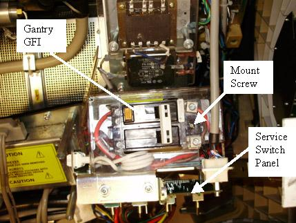
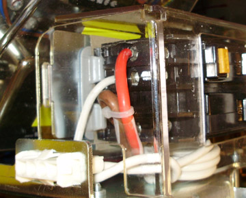

Operating Documentation
Direction 5307452-8EN, Rev# 4
Discovery CT750 HD Service Methods - Adv
Operating Documentation |
| Required Persons | Preliminary Reqs | Procedure | Finalization |
|---|---|---|---|
| 1 | Timing Not Applicable | 20 mins | 10 mins |
This procedure defines how to replace the Gantry GFI breaker.
| Last Revised: | October 13, 2008 |
| Item | Qty | Effectivity | Part# | Manufacturer | |
|---|---|---|---|---|---|
| FE Toolkit | 1 | - | - | - | |
| 2.5 mm hex key | 1 | - | - | - | |
| 5 mm hex key | 1 | - | - | - | |
| Item | Qty | Effectivity | Part# | Manufacturer |
|---|---|---|---|---|
| Tie-wraps | AR | - | - | - |
| Item | Qty | Effectivity | Part# | Manufacturer | |
|---|---|---|---|---|---|
| Gantry GFI breaker | 1 | - | 5126460 | - | |
| Follow ALL required safety and PPE procedures customary for your organization, when working on this product. | |
| Condition | Reference | Eff |
|---|---|---|
Only trained service personnel should service the GE CT Scanner. | - | - |
Remove gantry right side cover.
Refer to Replacement → Gantry → Enclosure → (Cover Removal Procedures).
| Always turn OFF the HVDC before the 120 VAC. Turning OFF 120 VAC power before HVDC power can result in equipment damage. | |
Turn OFF the three (3) main power switches (HVDC, 120VAC, and Axial Drive) on the Service Switch Panel.
Perform required LOTO procedures to lock out power at the A1 Panel.
Remove the gantry top cover for easier access to the GFI breaker. The gantry GFI circuit breaker is mounted on a panel directly behind the service switch panel.
Illustration 1: Gantry GFI Breaker - Top View

Remove the plastic (or metal depending on system version) safety cover.
Remove the wires from the load and input side of the GFI breaker. All leads are labeled, but do record wire locations.
The breaker is mounted to the plate with a slot head screw on one end and held in place by a bracket on the other end. Remove the screw, tilt the GFI breaker up and pull towards rear cover to remove.
Illustration 2: GFI Side View

Install new GFI by sliding the front end (front cover side) under bracket. See Illustration 2.
Screw the GFI breaker in place on the back end (rear cover side).
Reconnect all power leads removed. Observe all lead labels and all should be securely tightened. See Illustration 2 as a reference.
Install plastic safety cover.
Turn on the GFI breaker.
Remove the A1 Lockout/Tagout. Power up the console.
Install the gantry top cover.
Refer to Replacement → Gantry → Enclosure → (Cover Removal Procedures).
Enable 120 VAC, HVDC and Axial Drive service switches from the service switch panel. Press the table drives enable button on the lower right corner of the service switch panel.
Install the gantry right side cover.
Perform a [System Scanning Test] from the [Functional Checks] menu of the service manual to ensure system operation.